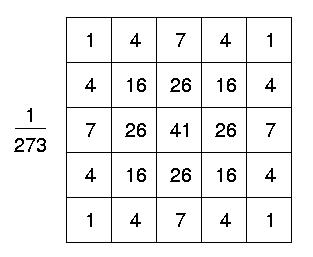
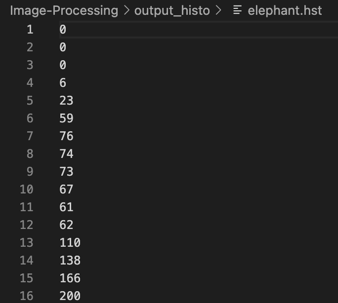

Image Processing
A quick description of the project.
Overview
This C++ based project implements four different image processing commands: copy, mono, gauss, and histo. The copy command is straightforward. Gauss command performs a gaussian blur on the image. The mono command turns the image to black and white. The histo command outputs a .hst file that is a histogram of RGB color frequencies of that image. The total time it takes for each operation including the time it takes to read the raw data, perform the actual operation, and store the data into the new file are all outputted to the terminal in microseconds.
I implemented these functions in two different ways that vary solely on the formatting of my data. The first way implements an array of structures (aos) where I created a color struct with three members for each red, green, and blue value and then put these into a vector. The second way implements a structure of arrays (soa) where there are three different arrays, one for each color, that are all members of the colors struct. These two implementations have different caching benefits depending on the way the data is accessed.
As you may notice the image file type is a .bmp or bitmap image. There is a 54 byte long header within each file that contains information such as the dimensions of the image, start index in the raw data, and any padding that is added on for formatting and alignment purposes. Once the header information is extracted, I know where to start reading the actual pixel data from the file. The pixels are each three bytes long, one for blue, one for green, and one for red. From this raw data I perform the operations listed above and described in more detail below.
Copy
The most basic of these commands is the copy. I simply copy the header information and output this into a new file. Then I read the raw data from the source image file into the given data structure and write it back into the new image file.
Mono
The mono command essentially normalizes each value and then applies a weight to each RGB value and sums these up. The weights for red, green, and blue are 0.2126, 0.7152, and 0.0722 respectively. These values come from the way that human eyes are susceptible to these color frequencies. There are a few other calculations involved leading to a single value between 0 and 255 which is set to each RGB value. This is how an image is turned into black and white. An example of applying this mono command to the landscape image is shown below along with the terminal command and output used to run it. Note that the operation is run twice using both data structure implementations. It is clear that aos implementation is almost 1 second faster!


Gauss
The gaussian command was one of the harder operations to implement. In the previous operations, I was only looking at one pixel at a time and performing some operation on that however in the gaussian blur, one needs to take into account the surrounding pixels. To perform this blur, simply multiply the RGB values of the surrounding pixels according to the weight matrix shown to the right, where the pixel of interest is located in the center. Then sum up all of these values and divide by 273 to receive the new value for the pixel of interest. As evident from the matrix, the pixel of interest is weighted the most and the weights of surrounding pixels decrease as you move further and further away. This creates a blend from pixel to pixel giving the image the effect of a blur. These effects are most noticeable on lower resolution images like the balloon shown below. To continue blurring the image more and more one could keep running the gauss operation.
The terminal output is also shown above. The run time for both implementations is just about 24 milliseconds which makes sense since our image resolution is much smaller than that of the landscape image used in the mono example.
Histo
 The histo operation is fairly simple. I create three static arrays of length 256 for each color with each value initialized to zero. I then parse the raw pixel data, using the RGB value as the index into the array, and iterate the corresponding value. For example if I come across the value 126 for green, I will iterate position 126 of the green array as to note there was another occurrence of this value. The final .hst file contains the integer counts stored in these three arrays. An example of this is shown to the left for the first few lines of the outputted .hst file. The first 256 lines correspond to the values of red, followed by 256 lines for greens and finally 256 for blues. From this example it is clear that there are no red pixels with the values 0, 1 or 2, however there are 138 occurrences of the value 13 for red and so on. Note that the line number on the left is one more than value of interest.